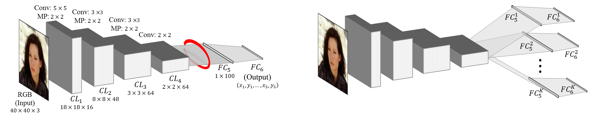

Facial Landmark Detection with
Tweaked Convolutional Neural Networks

CNN architectures. Left: The vanilla network described in Sec.
2.1 for facial landmark regression. We show that representations extracted from
the input to FC5 (marked in red) are highly specialized and reflect facial
alignment. Right: Our Tweaked CNN (TCNN) design, diverting intermediate features
to K different subsequent, fine-tuned processes in the same dimensions as the original
layers.
Abstract: We present a novel convolutional
neural network (CNN) design for facial landmark coordinate regression. We examine
the intermediate features of a standard CNN trained for landmark detection and show
that features extracted from later, more specialized layers capture rough landmark
locations. This provides a natural means of applying differential treatment midway
through the network, tweaking processing based on facial alignment. The resulting
Tweaked CNN model (TCNN) harnesses the robustness of CNNs for landmark detection,
in an appearance-sensitive manner without training multi-part or multi-scale models.
Our results on the AFLW, AFW, and 300W benchmarks show improvements over existing
work. We further provide results on the Janus benchmark, demonstrating the benefit
of our better alignment in face verification.
Reference: Yue Wu*,
Tal Hassner*, KangGeon Kim, Gerard Medioni and Prem Natarajan, Facial Landmark Detection
with Tweaked Convolutional Neural Networks, arXiv preprint arXiv:1511.04031,
21 Mar 2016
* Denotes joint first authorship / equal contribution
Click here for the
arXiv PDF
Click here for the
BibTex
Downloads
We provide the convolutional neural network models for facial landmark detection.
These have been reimplemented in Caffe
by Ishay Tubi.
This is ongoing work. Please check here regularly for news and updates on the
downloads available for this project.
If you find our code useful, please add suitable reference to our paper in your
work. Downloads include:
- A github repository with a
Caffe reimplementation of the Vanilla CNN described in the
paper. It includes code, prototype files and model weights. Important note:
Network weights may still be updated; more accurate networks may be posted here
in the future.
- Vanilla caffe model gist
- Please see
python notebook for example usage.
- The Vanilla CNN on the
Caffe model zoo
What's new
March 3rd, 2016:
Feb. 24th, 2016:
An initial Vanilla CNN reimplementation is now available.
Copyright 2016, Ishay Tubi, Yue
Wu and Tal Hassner
The SOFTWARE provided in this page is provided "as is", without any guarantee made
as to its suitability or fitness for any particular use. It may contain bugs, so
use of this tool is at your own risk. We take no responsibility for any damage of
any sort that may unintentionally be caused through its use.
Last update March 22nd, 2016
|